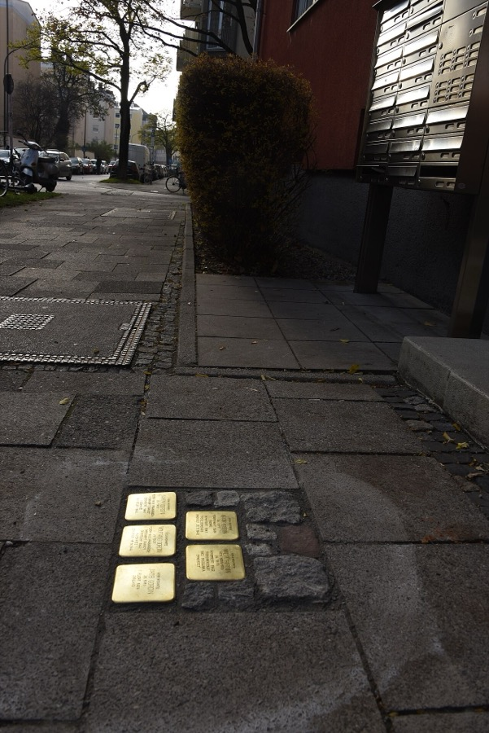
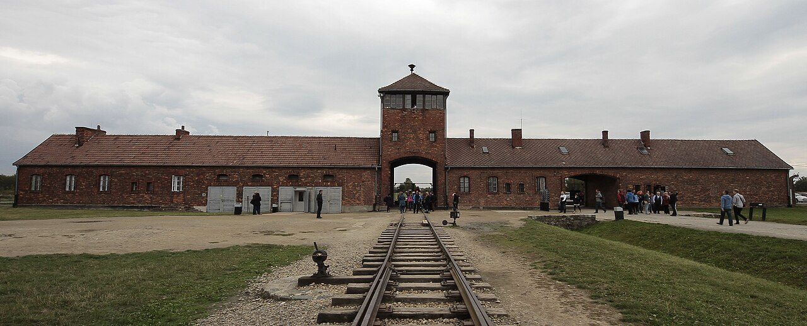

Station 7 · 1941 bis 1945 · Buch S. 98 bis 103
Der Holocaust
Leitfrage: Wie wurde aus Hass ein Völkermord, und warum erinnern wir uns bis heute daran?

Stolpersteine in München. Foto: Christian Michelides, CC BY-SA 4.0, Wikimedia Commons
Einstieg · 5 Minalle zusammen, in Ruhe
Ein Stein im Gehweg
Dieser Stein liegt in Nördlingen, in Schwaben (Buch S. 103). Lies ihn langsam.
EWie alt war Bernd Michael, als er deportiert wurde? Was erzählt dir dieser kleine Stein über ihn, und was erzählt er nicht?
Neben ihm liegt der Stein seiner Mutter Helene, geboren 1906. Beide wurden 1942 in das Getto Piaski in Polen verschleppt und ermordet.
Station A · PflichtBuch S. 98 bis 100
Von der Verfolgung zur Ermordung
Über sechs Millionen europäische Juden wurden ermordet. Dazu Hunderttausende Sinti und Roma, Menschen mit Behinderungen und viele andere, die nicht in das Weltbild der Nationalsozialisten passten.
ab 1939
Gettos
In Polen werden Juden in abgesperrte Stadtteile gezwungen. Im Warschauer Getto leben 450 000 Menschen auf engstem Raum. 1941 verhungern dort fast 30 000.
ab Sommer 1941
Massenerschießungen
Hinter der Front erschießen SS-„Einsatzgruppen“ und Polizei Hunderttausende jüdische Männer, Frauen und Kinder.
20. Januar 1942
Wannsee-Konferenz
Hohe Beamte und SS-Führer besprechen in einer Villa in Berlin, wie der Mord an allen Juden Europas organisiert wird. Sie nennen es „Endlösung der Judenfrage“.
1942 bis 1945
Vernichtungslager
Sechs Lager im besetzten Polen: Auschwitz, Belzec, Kulmhof, Majdanek, Sobibor, Treblinka. Allein in Auschwitz werden mindestens 1,1 Millionen Menschen ermordet.

A1Erkläre die drei Fachbegriffe in eigenen Worten: Getto, Holocaust, Shoah (Buch S. 98/99, blaue Kästen).
A2Warum bauten die Nationalsozialisten die Vernichtungslager im besetzten Polen und nicht in Deutschland?
Station B · PflichtBuch S. 101
Otto Schwerdt: „Die Erinnerung ist eine Pflicht gegenüber den Toten“
Otto Schwerdt überlebte Auschwitz. Später lebte er in Regensburg und erzählte Schülerinnen und Schülern von seinem Leben, so wie du heute.
- 1923 geboren in Braunschweig, jüdischen Glaubens
- 1936 Flucht der Familie nach Polen
- ab 1939 Leben in verschiedenen Gettos
- 1943 verhaftet, nach Auschwitz verschleppt, später Theresienstadt
- 1945 befreit zusammen mit seinem Vater. Mutter, Schwester und Bruder wurden in Auschwitz ermordet.
- 1954 Rückkehr nach Deutschland, später Regensburg
- 1990 erster Besuch der Gedenkstätte Auschwitz
- 1998 Buch „Als Gott und die Welt schliefen“, 2007 gestorben in Regensburg
„Nach meiner Befreiung wollte ich nie mehr hierher kommen […]. Ich hatte Angst vor meinen Gefühlen und Erinnerungen. Die Erinnerungen, die ich nicht mehr abschütteln kann, die mich nachts verfolgen.“ Otto Schwerdt über seinen ersten Besuch in Auschwitz 1990. Buch S. 101, Quelle 101.3 (gekürzt)
B1Otto Schwerdt sagte: „Die Erinnerung ist eine Pflicht gegenüber den Toten.“ Erkläre diesen Satz. Warum ist er 45 Jahre nach seiner Befreiung trotzdem nach Auschwitz gefahren?
Station C · PflichtBuch S. 102/103
Namen statt Zahlen
Sechs Millionen ist eine Zahl, die niemand begreifen kann. Deshalb erinnern viele Projekte an einzelne Menschen mit Namen. Der Künstler Gunter Demnig verlegt seit 1992 Stolpersteine, inzwischen über 100 000 in ganz Europa. In München gibt es zusätzlich die „Erinnerungszeichen“: Tafeln und Stelen an den Häusern, in denen Verfolgte lebten.
Dein Auftrag
- 1. Öffne die Karte der Münchner Erinnerungszeichen.
- 2. Such dir einen Menschen aus, gern in einem Stadtteil, den du kennst.
- 3. Lies seine Lebensgeschichte und schreib drei Dinge über ihn oder sie auf.
C1Name, Lebensdaten und drei Dinge, die du über diesen Menschen erfahren hast:
Zusatz · für Schnelle
Bei #everynamecounts der Arolsen Archives kann jeder mithelfen, Dokumente von Verfolgten abzutippen. So werden Namen und Schicksale für immer auffindbar. Schau dir die Seite an. Mitmachen geht auch zu Hause.
C2Warum ist es wichtig, jeden einzelnen Namen zu kennen?
Heute-Check · 5 Min
„Es reicht jetzt mit dem Erinnern.“
Manche wollen, dass wir aufhören, an den Holocaust zu erinnern. Oder sie machen ihn kleiner, als er war. Lies die Aussagen. Sie sind ohne Absender. Was steckt dahinter?
Rede
„Wir müssen endlich einen Schlussstrich ziehen. Dieser ewige Schuldkult muss aufhören.“
Einordnung zeigen
Niemand von euch ist schuld an dem, was damals passiert ist. Aber wir alle tragen Verantwortung, dass es nie wieder passiert. Wer das „Schuldkult“ nennt, will, dass wir vergessen.
Kommentar
„Die zwölf Jahre waren doch nur ein kleiner Fleck in über tausend Jahren großartiger deutscher Geschichte.“
Einordnung zeigen
Verharmlosung: Ein Völkermord an Millionen wird als Kleinigkeit dargestellt. Denk an Bernd Michael Mahler, fünf Jahre alt.
Video in sozialen Netzwerken
„Das mit den Gaskammern ist doch übertrieben. Das hat es so nie gegeben.“
Einordnung zeigen
Holocaustleugnung. Sie ist in Deutschland verboten und wird bestraft (§ 130 Strafgesetzbuch). Es gibt Millionen Dokumente, Fotos, Aussagen von Tätern und Überlebenden.
Grundgesetz Artikel 1, Absatz 1
„Die Würde des Menschen ist unantastbar. Sie zu achten und zu schützen ist Verpflichtung aller staatlichen Gewalt.“
Dieser Satz steht ganz bewusst an erster Stelle. Er ist die Antwort auf den Holocaust.
Was ist heute anders?
Der 27. Januar, der Tag der Befreiung von Auschwitz, ist Gedenktag in Deutschland und weltweit. Gedenkstätten wie Dachau erinnern an die Opfer. Aber: Judenhass gibt es noch immer. 2019 versuchte ein Attentäter in Halle, an Jom Kippur in eine voll besetzte Synagoge einzudringen. Er tötete zwei Menschen.
HBald gibt es keine Zeitzeugen wie Otto Schwerdt mehr. Wie kann man trotzdem gut erinnern? Was kannst du selbst tun?
Wir reden darüber · 13 MinMethode: Ruhige Runde mit Satzanfängen
Was nimmst du mit?
Ihr setzt euch in einen Stuhlkreis. Jeder darf einen Satz sagen, niemand muss. Es wird nichts bewertet und nicht diskutiert. Nur zugehört.
„Mich hat heute berührt, dass …“
„Ich frage mich, wie …“
„Für mich bedeutet Erinnern …“
- 1. Nachdenken (2 Min): Wähle einen Satzanfang und vervollständige ihn für dich, hier rechts oder im Kopf.
- 2. Runde (8 Min): Reihum. Wer etwas sagen möchte, sagt seinen Satz. Wer nicht möchte, sagt „weiter“.
- 3. Stille (1 Min): Zum Schluss eine Minute Stille für die Opfer.
- 4. Ausblick (2 Min): Es gab auch Menschen, die Widerstand leisteten. Darum geht es nächste Stunde.
DMein Satz:
Zum Schluss
Mein Hefteintrag
Dein PDF hat zwei Teile: Teil 1 ist der Hefteintrag zur Stunde, für alle gleich, das ist deine Grundlage für die Probe. Teil 2 sind deine eigenen Ergebnisse. Das PDF kommt in dein OneNote-Merkheft.
- 1Name eintragen und unten auf den Knopf tippen.
- 2Im Druckmenü auf das Teilen-Symbol tippen und das PDF sichern.
- 3In OneNote im Merkheft: Einfügen → Datei → als Ausdruck einfügen.
Merksatz der Stunde
Der Holocaust (hebräisch: Shoah) war der geplante Mord an über sechs Millionen europäischen Juden. Auch Sinti und Roma, Menschen mit Behinderungen und andere Gruppen wurden ermordet. Aus Ausgrenzung wurden Gettos, Massenerschießungen und schließlich Vernichtungslager wie Auschwitz. Wir erinnern an die Opfer mit ihren Namen, damit so etwas nie wieder geschieht.